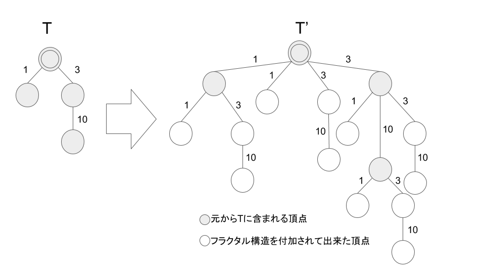

AORイカちゃんは、フラクタルな(自己相似的な)構造を持つ根付き木が好きである。 $N$ 頂点から成る重み付き根付き木 $T$ を用いて、以下のようなフラクタル構造を持つ根付き木 $T'$ を表現することを考える。
こうして表現される木は例えば下図のようになる。

AOR イカちゃんは、$T'$ に対して深さ優先探索をしようとしているが、全ての頂点を辿ると時間がとてもかかることに気づいた。 そこで、深さ優先探索時の遷移の際に確率 $p$ で遷移し、確率 $1-p$ で遷移しない方針で深さ優先探索を行い、いくつかのノード訪問をサボることにした。 $T$ と確率 $p$ が与えられるので、$T’$ に対して深さ優先探索を行う際に辿る全ての辺のコストの和の期待値を求めよ。 $T$ の情報は頂点数 $N$ と $N-1$ 本の辺の情報で与えられ、頂点 $1$ が根である。 各頂点は $1,2,\dots,N$ とラベリングされており、 $i \ (1 \le i \le N-1)$ 番目の辺は頂点 $x_i$ と $y_i$ をコスト $c_i$ で結んでいる。 今回の問題で扱う、確率 $p$ で子に遷移する深さ優先探索の非決定的アルゴリズムは以下のように表現される。 出力される $\mathrm{answer}$ が辿る辺のコストの総和である。
入力は以下の形式で与えられる。
$p$
$N$
$x_1 \ y_1 \ c_1$
$\vdots$
$x_{N-1} \ y_{N-1} \ c_{N-1}$
答えを 1 行で出力せよ。相対誤差または絶対誤差が $10^{-6}$ 以下なら AC となる。また、末尾に改行も出力せよ。
0.75 4 1 2 1 2 3 3 3 4 10
24.8569335938
0.75 4 1 2 1 1 3 3 3 4 10
35.0390625
問題文の図の木を与える例である。